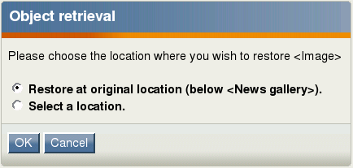

Restoring content
The trash makes it possible to recover objects that were previously removed from the system. Whenever a node is about to be removed, eZ Publish will ask the user if the object that is associated with that node should be placed in the trash (note that this only happens if the object has only one location, which is the usual case). If the "Move to trash" checkbox is checked, this is exactly what will happen. If not, the object will be lost forever. The contents of the trash can be inspected by accessing the "Trash" link which is located below the tree menu on the left. The following image shows the trash interface.
The trash interface.
From 3.9, an object in the trash can be put right back to the location from where it was deleted. However, this is only possible if the original parent node is still in the tree. If the original parent node of the object is removed (and even if it is restored), you will have to manually specify a location during recovery. The following text explains how you can recover an object from the trash.
- Bring up the trash interface by clicking the "Trash" link. The system will display a list of objects that have been put into the trash.
- Locate the object that you wish to put back into the node tree.
Click the object's corresponding edit icon (on the right hand side). The system will bring up the "Object retrieval" interface and suggest either to restore the object at its original/previous location (this feature is available only if the parent node of the object was not removed from the tree) or to select a new location where the object should be placed. The following screenshot demonstrates how the "Object retrieval" interface looks like.
The "Object retrieval" interface
- If you wish to restore the object at its original location, select the corresponding radio button and click "OK". If you need to specify a new/alternate location to the object being recovered, select the corresponding radio button and choose the desired location using the browse interface; the object will be recovered at the selected location. Note that the system will automatically ask for a new/alternate location if the original parent node has been deleted (furthermore, it does not matter if it was restored, once the original parent node is removed, the relation between the objects is gone).
Balazs Halasy (07/02/2006 1:29 pm)
Balazs Halasy (31/05/2007 6:08 pm)
Comments
The trash can
Friday 08 September 2006 1:22:01 pm
Helle Andersen
Another problem is that the object is placed in the trash can of the owner - not the person who actually deleted it. In most cases at our site the person editing an object is not the same person who created the object. That means that in most cases when an object is deleted it is actually lost. And even when you are an administrator you do not have access to other person's trash
A suggestion: could the deleted object not be placed three places: in the trash can of the person who owns the object, in the trash can of the person who actually deleted the object, and someplace where a person with admninistrator's rights could get to all the deleted files.
"Create" permissions required to restore objects
Monday 08 February 2010 10:40:45 pm
Leif Arne Storset
(Cross-posted to "Removing content"; posted there because that article mentions permissions.)